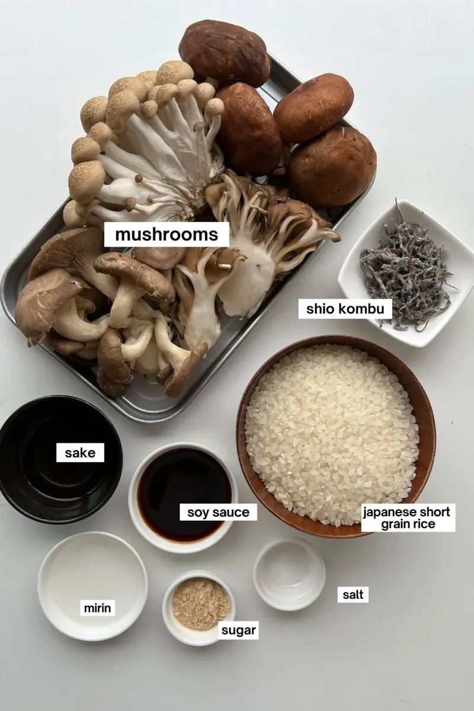
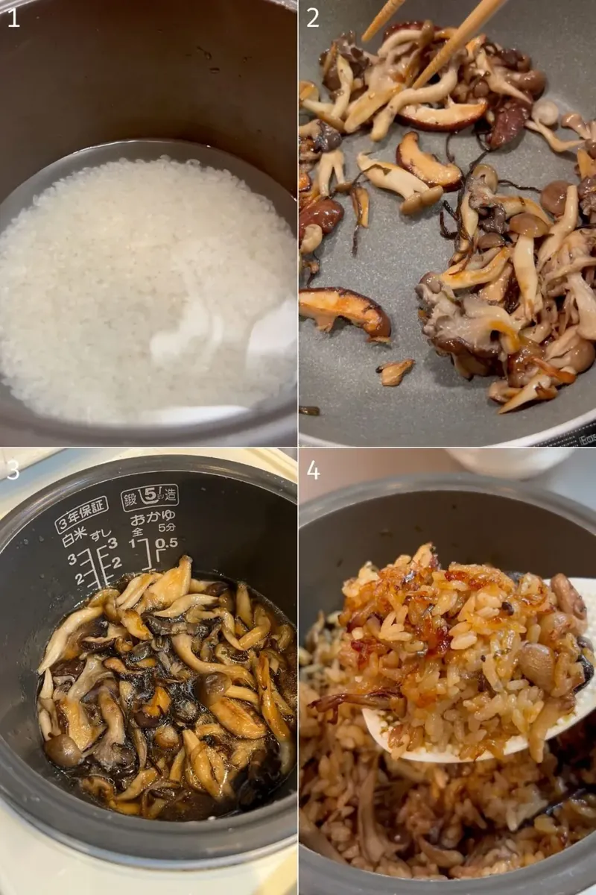

Japanese Mushroom Rice (Kinoko Gohan)
Simple, Wholesome & Full of Flavor. A Perfect Meal!
Japanese Mushroom Rice, also known as Kinoko Gohan (きのこご飯), is a comforting and flavorful Japanese rice dish made with seasoned rice and a variety of earthy mushrooms. This traditional recipe is a type of takikomi gohan, where rice is cooked together with vegetables and seasonings, allowing every grain to absorb rich umami flavors.
Made with ingredients like soy sauce, mirin, mushrooms, and shio kombu, this dish has a delicate balance of savory, slightly sweet, and aromatic flavors. Mushrooms such as shiitake, maitake, and shimeji give the rice its signature depth and hearty texture, making it both simple and deeply satisfying.
“Simple, wholesome & full of flavor. A perfect meal!”
This cozy Japanese-style rice dish is especially popular during autumn when mushrooms are in season, but it can be enjoyed all year round as a light lunch, dinner, or comforting side dish.
- Prep Time: 15 mins
- Cook Time: 35 mins
- Total Time: 50 mins
- Serves: 2–3

Ingredients

- 2 cups Japanese short-grain rice
- 2½ cups water
- 1½ cups assorted mushrooms, sliced
(shiitake, maitake, shimeji, or a mix) - 2 tablespoons soy sauce
- 1 tablespoon mirin
- 1 tablespoon sake (optional)
- 1 teaspoon sugar
- 2 tablespoons shio kombu (seasoned dried kelp)
- ½ teaspoon MSG (optional)
- Salt, to taste
- 1 teaspoon butter (optional, for serving)
Optional Substitutions
- Dashi powder or seaweed can be used instead of shio kombu for added umami.
- If mirin is unavailable, add a little extra sake with a pinch of sugar.
- Sake can be skipped for a simpler version.
Step-by-Step Recipe

Step 1: Prepare the Rice
Wash the rice thoroughly under cold water until the water becomes mostly clear. Soak the rice for about 30 minutes, then drain well before cooking.
Step 2: Sauté the Mushrooms
Heat a pan over medium heat and sauté the sliced mushrooms with half of the shio kombu until lightly golden and slightly charred. This step is optional, but it helps bring out a deeper and richer mushroom flavor.
Step 3: Prepare the Rice Cooker
Add the soaked rice to a rice cooker or pot. Pour in soy sauce, mirin, sake, sugar, the remaining shio kombu, MSG (if using), and a small pinch of salt.
Step 4: Add Water and Mushrooms
Pour in water and gently mix the ingredients. Place the sautéed mushrooms on top of the rice mixture without stirring too much.
Step 5: Cook the Rice
Cook using the “mixed rice” setting on your rice cooker or cook normally with an extra 5–10 minutes of cooking time to allow the flavors to fully develop.
Step 6: Steam and Fluff
Once cooked, let the rice rest covered for about 10 minutes. Fluff gently using a rice paddle or fork so the mushrooms mix evenly throughout the rice.
Step 7: Serve Warm
Serve hot as a comforting meal or side dish. For extra richness, place a small piece of butter on top and let it melt into the warm rice before serving.